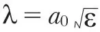
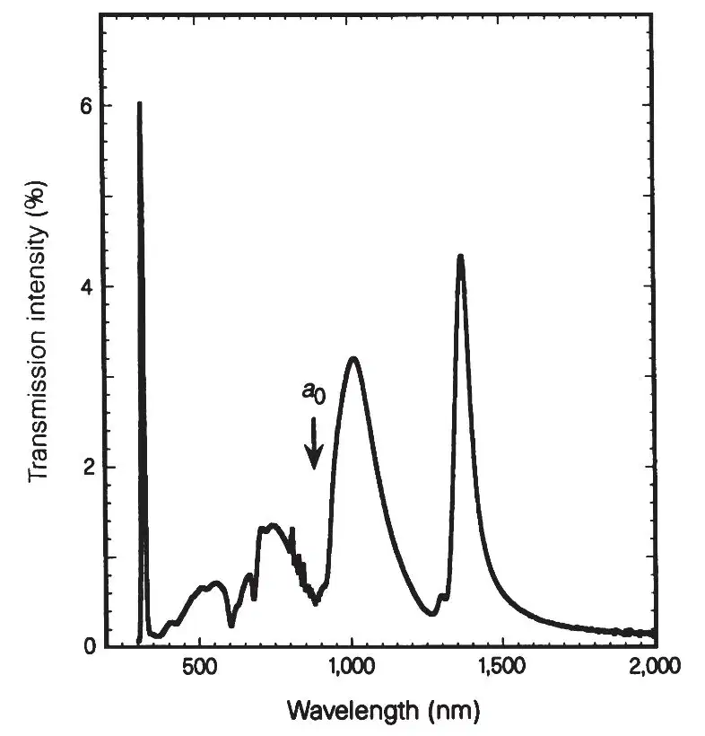
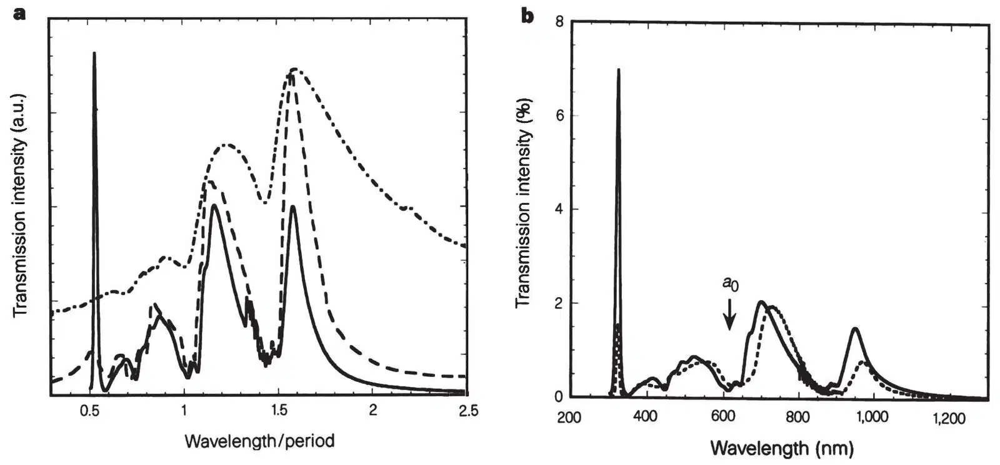
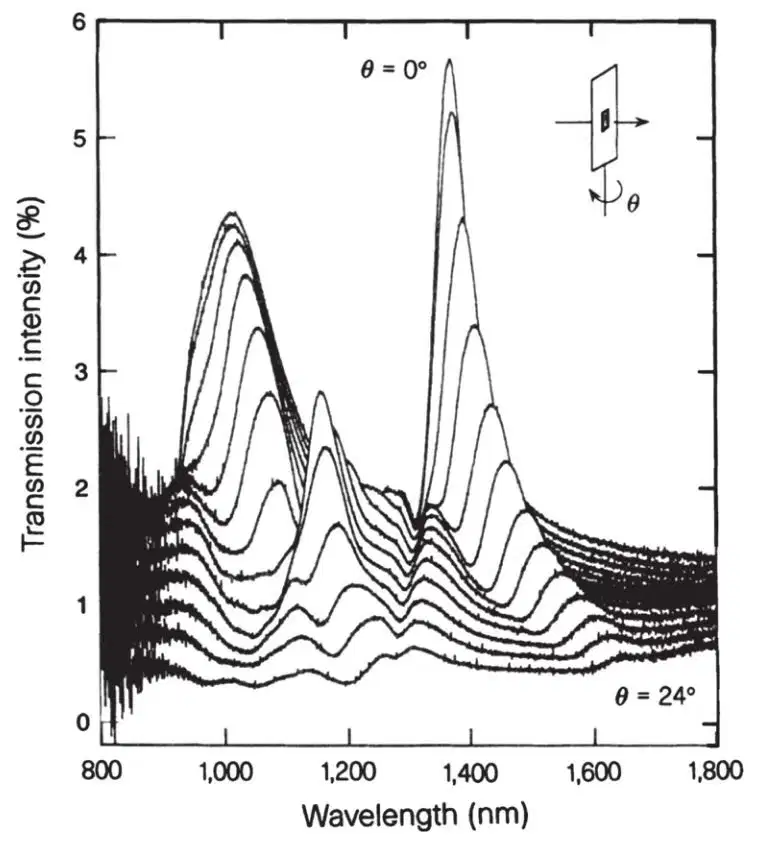
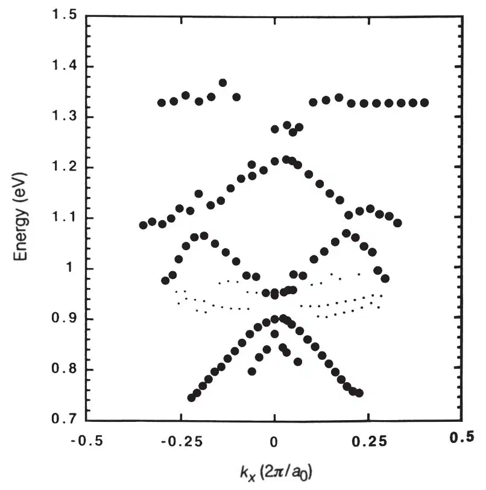

中文
中文T. W. Ebbesen et al.
Editor’s Note
Light rays are generally considered to be blocked by apertures smaller than the light’s wavelength. This limits the resolution of optical microscopes. But here Thomas Ebbesen of the NEC Corporation in Princeton and colleagues report the surprising ability of light to “squeeze through” an array of sub-wavelength-sized holes in a thin metal sheet. The effect stems from the interaction of light with mobile electrons on the surface of the metal, which can be excited into wavelike motions called plasmons. A plasmon wave can pass through the hole and then re-radiate light on the far side. This paper stimulated interest in the topic now called plasmonics, which takes advantage of light-plasmon applications to achieve a range of unusual effects, including “invisibility shields”. 中文
The desire to use and control photons in a manner analogous to the control of electrons in solids has inspired great interest in such topics as the localization of light, microcavity quantum electrodynamics and near-field optics1-6. A fundamental constraint in manipulating light is the extremely low transmittivity of apertures smaller than the wavelength of the incident photon. While exploring the optical properties of submicrometre cylindrical cavities in metallic films, we have found that arrays of such holes display highly unusual zero-order transmission spectra (where the incident and detected light are collinear) at wavelengths larger than the array period, beyond which no diffraction occurs. In particular, sharp peaks in transmission are observed at wavelengths as large as ten times the diameter of the cylinders. At these maxima the transmission efficiency can exceed unity (when normalized to the area of the holes), which is orders of magnitude greater than predicted by standard aperture theory. Our experiments provide evidence that these unusual optical properties are due to the coupling of light with plasmons—electronic excitations—on the surface of the periodically patterned metal film. Measurements of transmission as a function of the incident light angle result in a photonic band diagram. These findings may find application in novel photonic devices. 中文
A variety of two-dimensional arrays of cylindrical cavities in metallic films were prepared and analysed for this study. Typically, a silver film of thickness t=0.2 μm was first deposited by evaporation on a quartz substrate. Arrays of cylindrical holes were fabricated through the film by sputtering using a Micrion focused-ion-beam (FIB) System 9500 (50 keV Ga ions, 5 nm nominal spot diameter). The individual hole diameter d was varied between 150 nm and 1 μm and the spacing between the holes (that is, the periodicity) a0, was between 0.6 and 1.8 μm. The zero-order transmission spectra, where the incident and detected light are collinear, were recorded with a Cary 5 ultraviolet–near infrared spectrophotometer with an incoherent light source, but the arrays were also studied on an optical bench for transmission, diffraction and reflection properties using coherent sources. 中文
Figure 1 shows a typical zero-order transmission spectrum for a square array of 150 nm holes with a period a0 of 0.9 μm in a 200 nm thick Ag film. The spectrum shows a number of distinct features. At wavelength λ=326 nm the narrow bulk silver plasmon peak is observed which disappears as the film becomes thicker. The most remarkable part is the set of peaks which become gradually stronger at longer wavelengths, increasingly so even beyond the minimum at the periodicity a0.There is an additional minimum at

corresponding to the metal–quartz interface (where ε is the dielectric constant of the substrate). For , there is no diffraction from the array nor from the individual holes. As expected, the first-order diffraction spots can be seen to be grazing the surface (that is, the diffraction angle approaches 90°) as the wavelength approaches the period from below (this might, in fact, enhance the coupling to be discussed in the next paragraphs). The maximum transmitted intensity occurs at 1,370 nm, nearly ten times the diameter of an individual hole in the array. Even more surprising is that the absolute transmission efficiency, calculated by dividing the fraction of light transmitted by the fraction of surface area occupied by the holes, is ≥ 2 at the maxima. In other words, more than twice as much light is transmitted as impinges directly on the holes. Furthermore, the transmittivity of the array scales linearly with the surface area of the holes. This is all the more remarkable considering that the transmission efficiency of a single sub-wavelength aperture is predicted by Bethe7 to scale as (r / λ)4 where r is the hole radius; accordingly for a hole of 150 nm diameter one expects a transmission efficiency on the order of 10－3. In addition, the intensity (I) of the zero-order transmission from a grating is expected to decrease monotonically at larger wavelengths (I∝λ－1) (ref. 8). Therefore our results must imply that the array itself is an active element, not just a passive geometrical object in the path of the incident beam. 中文

Fig. 1. Zero-order transmission spectrum of an Ag array (a0=0.9 μm, d=150 nm, t=200 nm). 中文
To understand the origin of this phenomenon, we tested the dependence on all the possible variables such as hole diameter, periodicity, thickness and type of metal. It is beyond the scope of this Letter to describe the details of all these experiments. Instead we summarize our observations and illustrate some of the key factors that determine the shape of these spectra. To begin with, the periodicity of the array determines the position of the peaks. The positions of the maxima scale exactly with the periodicity, as shown in Fig. 2a, independent of metal (Ag, Cr, Au), hole diameter and film thickness. The width of the peaks appears to be strongly dependent on the aspect ratio (t / d or depth divided by diameter) of the cylindrical holes (Fig. 2a). For t / d=0.2, the peaks are very broad and just discernible and when the ratio reaches ~1, the maximum sharpness is obtained. Further narrowing might depend on the quality of the individual holes. The thickness dependence of the spectra is displayed in Fig. 2b for 0.2 and 0.5 μm Ag films. While the intensity of the bulk plasmon peak decreases rapidly in this range, that of the longer-wavelength peaks decreases approximately linearly with thickness. The spectra change significantly with the type of lattice, for example whether the array is a square or a triangular lattice. 中文

Fig. 2. Effects of parameters on zero-order transmission spectra. a, Spectra for various square arrays as a function of λ / a0. Solid line: Ag, ao=0.6 μm, d=150 nm, t=200 nm; dashed line: Au, a0=1.0 μm, d=350 nm, t=300 nm; dashed-dotted line: Cr, a0=1.0 μm, d=500 nm, t=100 nm. b, Spectra for two identical Ag arrays with different thicknesses. Solid line: t=200 nm; dashed line: t=500 nm (this spectrum has been multiplied by 1.75 for comparison). For both arrays: a0=0.6 μm; d=150 nm. 中文
Two important clues relating this phenomenon to surface plasmons (SPs) come from the following observations. One is the absence of enhanced transmission in hole arrays fabricated in Ge films which points to the importance of the metallic film. The other clue is the angular dependence of the spectra in metallic samples. The zero-order transmission spectra change in a marked way even for very small angles, as illustrated in Fig. 3 where the spectra were recorded every 2°. The peaks change in intensity and split into new peaks which move in opposite directions. This is exactly the behaviour observed when light couples with SPs in reflection gratings9-14. SPs are oscillations of surface charges at the metal interface and are excited when their momentum matches the momentum of the incident photon and the grating as follows:
ksp= kx±nGx±mGy
where ksp is the surface plasmon wavevector, kx=(2π / λ) sinθ is the component of the incident photon’s wavevector in the plane of the grating and Gx=Gy=2π / a0 are the grating momentum wavevectors for a square array. Therefore if the angle of incidence θ is varied, the incident radiation excites different SP modes and by recording the peak energies as a function of kx we obtain the dispersion relation shown in Fig. 4. This figure reveals the band structure of SP in the two-dimensional array and it clearly demonstrates the presence of gaps with energies around 30 to 50 meV; these are due to the lifting of the degeneracy by SPs interacting with the lattice. An extrapolation of the dispersion curves yields an intercept with the k-axis at a value which is within the experimental error (~10%) of that expected from the periodicity (2π / a0). The results of Figs 3 and 4 are also sensitive to polarization as expected, but a clear assignment has not yet been possible because of inherent structure of the grains in the metal film. 中文

Fig. 3. Zero-order transmission spectra as a function of incident angle of the light. Spectra were taken every 2° up to 24° for a square Ag array (a0=0.9 μm, d=150 nm, t=200 nm). The individual spectra are offset vertically by 0.1% from one another for clarity. 中文

Fig. 4. Dispersion curves (solid circles) along the [10] direction of the array. These curves are extracted from the energy of the transmission peaks of Fig. 3. The momentum kx is in the plane of the array and is given by kx=(2π / λ) sinθ where θ is the incident angle of the beam (the units are normalized to 2π / a0). The curves with the smaller dots correspond to peaks whose amplitudes are much weaker and may or may not be related to the band structure as they do not shift significantly with momentum. 中文
In our experiments the coupling of light with SPs is observed in transmission rather than reflection, in contrast with previous work on SPs on reflection gratings. In those studies the coupling of light to SPs is observed as a redistribution of intensity between different diffracted orders. Even in transmission studies of wire gratings by Lochbihler15, the effect of SPs is observed through dips in zero-order transmitted light. There is an extensive literature on the infrared properties of wire grids which show a broad transmission centred at λ≈1.2a0; this has been interpreted in terms of induction effects, in analogy with electric circuits16,17. Our results demonstrate the strong enhancement of transmitted light due to coupling of the light with the SP of the two-dimensional array of sub-wavelength holes. Furthermore our results indicate a number of unique features that cannot be explained with existing theories. The SP modes on the metal–air interface are distinctly different from those at the metal–quartz interface. However, the spectra are identical regardless of whether the sample is illuminated from the metal or quartz side. At present we do not understand the detailed mechanism of the coupling between the SP on the front and back surfaces which results in larger than unity transmission efficiency of the holes. The thickness dependence (see Fig. 2b) suggests that the holes play an important part in mediating this coupling and that nonradiative SP modes are transferred to radiative modes by strong scattering in the holes. 中文
In photonic bandgap arrays2,4, the material is passive and translucent at all wavelengths except at the energies within the gap. In the present arrays, the material plays an active role (through the plasmons) and it is opaque at all wavelengths except those for which coupling occurs. The combination, or integration, of these two types of phenomena might lead to optical features that are very interesting from both fundamental and technological points of view. The demonstration of efficient light transmission through holes much smaller than the wavelength and beyond the inter-hole diffraction limit might, for example, inspire designs for novel nearfield scanning optical microscopes6, or sub-wavelength photolithography. Theoretical analysis of the results would also be useful for gaining better insight into this extraordinary transmission phenomenon. Perhaps only then can we expect to grasp the full implications of these findings. 中文
(391, 667-669; 1998)
T. W. Ebbesen*†, H. J. Lezec‡, H. F. Ghaemi*, T. Thio* & P. A. Wolff*§
* NEC Research Institute, 4 Independence Way, Princeton, New Jersey 08540, USA
† ISIS, Louis Pasteur University, 67000 Strasbourg, France
‡ Micrion Europe GmbH, Kirchenstraße 2, 85622 Feldkirchen, Germany
§ Department of Physics, Massachusetts Institute of Technology, Cambridge, Massachusetts 02139, USA
Received 15 July; accepted 24 November 1997.
References:
1. John, S. Localization of light. Phys. Today 32 (May 1991).
2. Yablonovitch, E. & Leung, K. M. Hope for photonic bandgaps. Nature 351, 278 (1991).
3. Dalichaouch, R., Armstrong, J. P., Schultz, S., Platzman, P. M. & McCall, S. L. Microwave localization by two-dimensional random scattering. Nature 354, 53-55 (1991).
4. J. D. Joannopoulos, Meade R. D. & Winn, J. N. Photonic Crystals (Princeton Univ. Press, Princeton, 1995).
5. Haroche, S. & Kleppner, D. Cavity quantum electrodynamics. Phys. Today 24 (January 1989).
6. Betzig, E. & Trautman, J. K. Near-field optics: Microscopy, spectroscopy, and surface modification beyond the diffraction limit. Science 257, 189-194 (1992).
7. Bethe, H. A. Theory of diffraction by small holes. Phys. Rev. 66, 163-182 (1944).
8. Born, M. & Wolf, E. Principles of Optics (Pergamon, Oxford, 1980).
9. Ritchie, R. H., Arakawa, E. T., Cowan, J. J. & Hamm, R. N. Surface-plasmon resonance effect in grating diffraction. Phys. Rev. Lett. 21, 1530-1533 (1968).
10. Raether, H. Surface Plasmons (Springer, Berlin, 1988).
11. Chen, Y. J., Koteles, E. S., Seymour, R. J., Sonek, G. J. & Ballantyne, J. M. Surface plasmons on gratings: coupling in the minigap regions. Solid State Commun. 46, 95-99 (1983).
12. Kitson, S. C., Barnes, W. L. & Sambles, J. R. Full photonic band gap for surface modes in the visible. Phys. Rev. Lett. 77, 2670-2673 (1996).
13. Watts, R. A., Harris, J. B., Hibbins, A. P., Preist, T. W. & Sambles, J. R. Optical excitations of surface plasmon polaritons on 90 and 60 bi-gratings. J. Mod. Opt. 43, 1351-1360 (1996).
14. Derrick, G. H., McPhedran, R. C., Maystre, D. & Neviere, M. Crossed gratings: a theory and its applications. Appl. Phys. 18, 39-52 (1979).
15. Lochbihler, H. Surface polaritons on gold-wire gratings. Phys. Rev. B 50, 4795-4801 (1994).
16. Ulrich, R. Far-infrared properties of metallic mesh and its complimentary structure. Infrared Phys. 7, 37-55 (1967).
17. Larsen, T. A survey of the theory of wire grids. I.R.E. Trans. Microwave Theory Techniques 10, 191-201 (1962).
Acknowledgements. We thank S. Kishida, G. Bugmann and J. Giordmaine for their encouragement, and R. Linke, R. McDonald, M. Treacy, J. Chadi and C. Tsai for discussions. We also thank G. Lewen, G. Seidler, A. Krishnan, A. Schertel, A. Dziesiaty and H. Zimmermann for assistance.
Correspondence should be addressed to T.W.E.